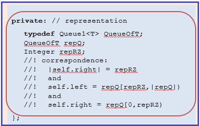

incoming: s1 = (<32,40>,<19,7,1>) incoming: y = 47 s1.addRightFront(y); Names: One CM: |
 |
|
template <class T>
void List2<T>::addRightFront (T& x)
{
// TODO: for Step 3 (above) put your implementation here
} // addRightFront